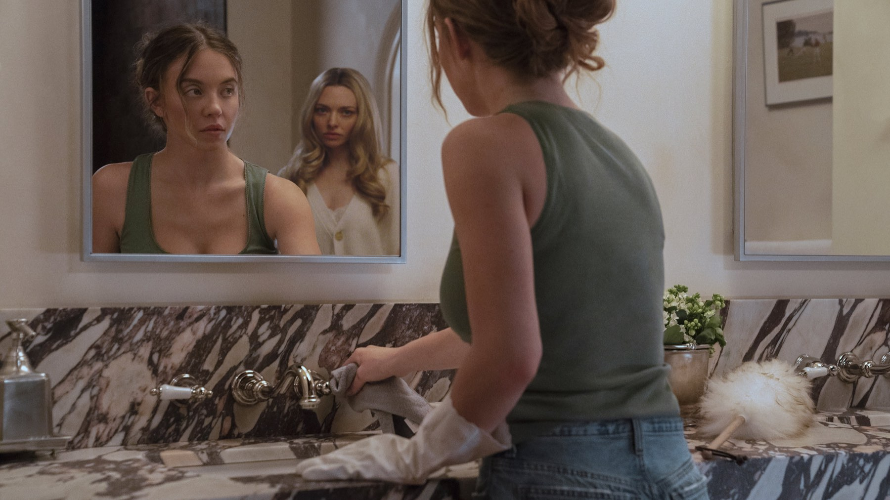
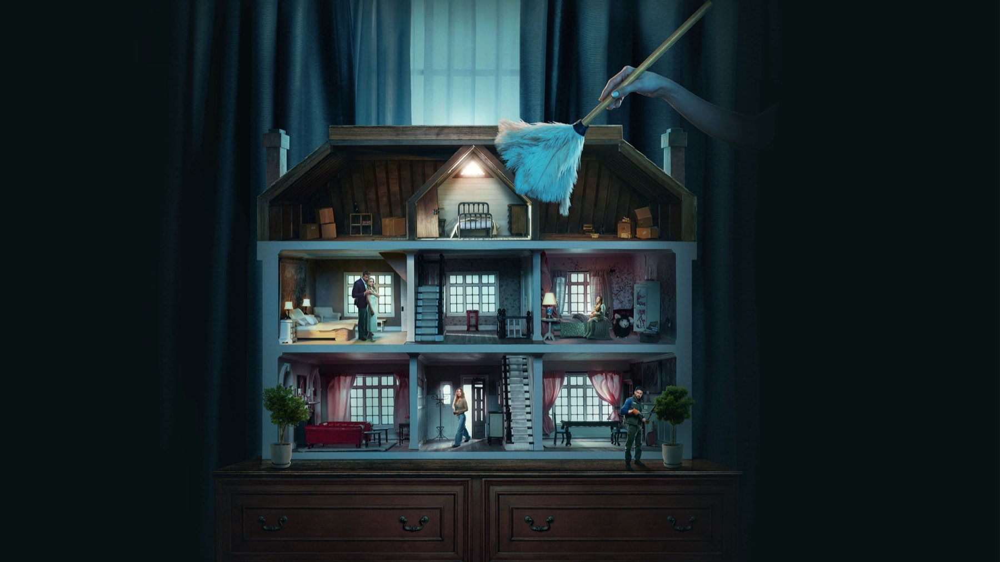

The Housemaid (Una di famiglia): la recensione
La soffitta ha la finestra sigillata e il regista viene dalla commedia: il thriller di Paul Feig ride dentro la tensione e funziona, finché non si allunga
The Housemaid vince quando ride e perde quando si allunga, e lo racconta già la prima stanza. Una camera in soffitta con la finestra sigillata e una porta che si chiude con una serratura all'esterno: è quella che i Winchester assegnano a Millie Calloway, appena uscita di prigione e obbligata, in libertà vigilata, a tenersi un lavoro regolare. Il film ci mostra subito dov'è la trappola e scommette che resteremo a guardare lo stesso.
La nostra tesi è questa: Una di famiglia - The Housemaid ha il coraggio di essere un po' ridicolo e ne fa un'arma, ma non si fida abbastanza di sé per durare meno. Funziona quando lascia respirare la tensione con una risata, mentre inciampa quando spiega ciò che il pubblico ha già intuito.
Di che cosa parla
Millie viene assunta da Nina Winchester come domestica a tempo pieno in una villa di Great Neck, a Long Island, dove vive anche la figlia Cece con il padre Andrew, marito di Nina. Nina è incinta e ha bisogno di aiuto in casa, almeno a dirsi. Fin qui la premessa, perché il resto è meglio scoprirlo da soli: in un thriller così la sorpresa pesa quanto il biglietto.
La scena che vale il film
Ci basta la soffitta. Una camera in una villa di lusso ha la finestra sigillata e la porta che si chiude da fuori: la casa perfetta nasconde una cella al piano di sopra, e lo fa con un solo dettaglio di scenografia. È una scelta di messa in scena e non di dialogo, ed è la più netta del film perché dice la verità prima dei personaggi. Per questo non citiamo una battuta, ma ricordiamo che qui parlano gli oggetti, e ci interessa ciò che si vede.

Quando il film ride, e perché regge
Paul Feig viene dalla commedia, e quindi il tono è la domanda vera. In un'intervista a Slashfilm del 19 dicembre 2025, Feig dice che la sua influenza più forte è Hitchcock, proprio perché sa sciogliere la tensione con una risata. Descrive il lavoro come un cammino sul filo del tono: la battuta va piazzata nel punto giusto, e la posta in gioco deve restare reale, altrimenti il pubblico smette di crederci.
Il confronto più utile è con il suo film precedente dello stesso genere, A Simple Favor del 2018, una commedia nera e un mistero con Anna Kendrick e Blake Lively. Anche lì Feig lavorava sulla tensione tra risata e minaccia, ma con un'etichetta dichiarata di commedia; qui il genere è il thriller e l'umorismo deve guadagnarsi il permesso di entrare. I numeri dicono che il pubblico ha scelto il secondo: 97,6 milioni di dollari di incasso mondiale per A Simple Favor, contro 400,5 per questo.
Seyfried tiene il film
Il film vive del duello tra Sweeney e Seyfried, e per noi lo vince Seyfried. Nina è il ruolo più instabile e il più rischioso: sempre folle e cattiva diventerebbe un cartone animato, come ammette lo stesso Feig, che racconta di aver chiesto ad Amanda di alternare la rabbia a momenti di dolcezza, a partire dalla consegna dei primi giorni di set: «più strana, ancora più strana, ma dolce». Quella miscela di sorriso e minaccia è ciò che rende credibile la casa perfetta.
Sweeney ha il compito più ingrato, perché deve restare credibile mentre attorno tutto è sopra le righe. Lo fa con misura, e infatti a Damiano Panattoni di Movieplayer le due protagoniste sono sembrate «strepitose». In italiano le voci sono quelle di Letizia Ciampa per Millie e di Domitilla D'Amico per Nina, con Edoardo Stoppacciaro per Andrew e Marco Vivio per Enzo: un doppiaggio che non giudichiamo, perché non l'abbiamo confrontato scena per scena con l'originale.

Dove inciampa
Il difetto principale è la durata. Centotrentuno minuti sono tanti per un thriller domestico la cui mappa è, per dirla con Feig, «a prova di errore»: il regista racconta che dopo i test con il pubblico ha solo accorciato dove il racconto andava per le lunghe, senza toccare la struttura. La struttura resta quella del romanzo di McFadden e, con quella durata, il racconto rischia di ripetersi, mentre la tensione guadagnata con la soffitta si raffredda. Anche per Panattoni il film dura troppo e lascia sullo sfondo diversi personaggi, la figlia Cece su tutti: è una critica che condividiamo, perché una bambina messa in scena e poi dimenticata toglie peso alla posta in gioco.
Sulle intenzioni ci dividiamo dalla stessa recensione: per Panattoni il problema è che il film si prende troppo sul serio e cerca un'eleganza fuori contesto. A noi pare invece il contrario, perché il racconto regge quando ride e vacilla ogni volta che prova a diventare un dramma. Resta il fatto che, nei momenti migliori, l'opera sa essere un omaggio consapevole ai thriller kitsch degli anni Novanta, e allora ci diverte perché non fa finta di niente.
Come è stato accolto
A novembre 2026 i numeri dicono che il film è piaciuto più al pubblico che ai critici: budget di 35 milioni di dollari, circa 400,5 milioni di incasso mondiale (126,4 negli Stati Uniti e 274,1 nel resto del mercato), 3,6 milioni di euro in Italia, Rotten Tomatoes al 74% su 202 recensioni, Metacritic 65 su 100 e un B di CinemaScore. Per noi significa che il genere domestico ha ancora un pubblico largo e che la stampa si aspettava qualcosa di meno schietto.
Dove vederlo e cosa viene dopo
Dopo l'uscita in sala del 1° gennaio 2026, a novembre 2026 il film è in streaming su Amazon Prime Video, oltre che su Sky Go e Now TV. La disponibilità può cambiare, quindi controllate prima di accendere la tv. Chi vuole tornare dai Winchester avrà un seguito tratto da The Housemaid's Secret, previsto per il 17 dicembre 2027, con Feig, Sweeney e Morrone di nuovo a bordo e Kirsten Dunst tra i nuovi arrivi.
A chi lo consigliamo
A chi ama i thriller domestici che non fingono di essere altro e ha voglia di due attrici in duello, ma anche a chi ha apprezzato A Simple Favor e vuole vedere dove porta Feig un tono simile con più paura. Meno invece a chi cerca una storia davvero imprevedibile o non ha la pazienza per una durata così generosa.
Un thriller che ride dentro la paura e si regge su Amanda Seyfried, ma dura più di quanto serva a dirci ciò che la soffitta ci aveva già detto.
Domande frequenti
Quando è uscito The Housemaid in Italia?
Il 1° gennaio 2026 al cinema, con il titolo Una di famiglia - The Housemaid.
Il film è tratto da un libro?
Sì, dal romanzo del 2022 di Freida McFadden. La sceneggiatura è di Rebecca Sonnenshine.
Dove si vede The Housemaid in Italia?
In streaming su Amazon Prime Video, oltre che su Sky Go e Now TV.
Ci sarà un seguito?
Sì, tratto dal romanzo The Housemaid's Secret, con uscita prevista il 17 dicembre 2027 e Kirsten Dunst nel cast.
Fonti consultate (6)
- Slashfilm – Paul Feig sull'influenza di Hitchcock (intervista di Ethan Anderton, 19 dicembre 2025)
- Movieplayer – Una di famiglia - The Housemaid, recensione di Damiano Panattoni (27 dicembre 2025)
- Wikipedia – The Housemaid (2025 film)
- Wikipedia – Una di famiglia - The Housemaid
- Wikipedia – A Simple Favor (film)
- TMDB – The Housemaid